도자기공예기능사 (2003-10-05 기출문제)
1과목: 임의 구분
1. 다음 공예의 특성 중 다량성과 관계가 가장 깊은 것은?
- 법칙성
- 모양성
- 간접성
- 저렴성
(정답률: 94%)

2. 텍스츄어(Texture)란 무엇을 말하는가?
- 균형감
- 재질감
- 입체감
- 운동감
(정답률: 97%)
3. 다음 디자인의 원리 중 율동(rhythm)과 관계가 있는 것은?
- 집중(centrality)
- 대비(contrast)
- 대칭(symmetry)
- 연속(continuity)
(정답률: 96%)
4. 이웃하는 두 항의 비가 일정한 수열에 의한 비례로서, 최초의 항과 비례를 두는 데 따라서 여러가지 비례를 얻을 수 있는 것은? (예 : 1:2:4:8:16...)
- 피보나치 수열
- 펠수열
- 조화수열
- 등비수열
(정답률: 93%)
5. 유럽의 근대화에 가장 큰 계기가 된 것은?
- 유겐트 스틸
- 산업혁명
- 아루누보
- 디자인혁명
(정답률: 98%)
6. 백제시대 공예의 특성과 가장 거리가 먼 것은?
- 신라와 일본에 공예문화를 전함
- 우아하고 미의식이 세련된 조형
- 맑고 단순한 개성의 표현
- 토우와 이형토기의 유물이 삼국 중 가장 많음
(정답률: 91%)
7. 다음 색에 대한 설명 중 올바른 것은?
- 색의 3속성은 명도, 채도, 대비이다.
- 채도가 높은 색 일수록 명도가 높다.
- 채도가 낮은 색은 탁한색이다.
- 순색은 모두 같은 채도이다.
(정답률: 75%)
8. 다음 색광 혼합 중 틀린 것은?
- 빨강(R) + 녹색(G) = 노랑(Y)
- 녹색(G) + 파랑(B) = 청록(C)
- 파랑(B) + 빨강(R) = 자주(M)
- 빨강(R) + 녹색(G) + 파랑(B) = 검정(BL)
(정답률: 87%)
9. 먼셀(Munsell)의 색표기에서 빨강을 5R 4/14로 표기하는데 여기에서 명도는?
- 5
- R
- 4
- 14
(정답률: 83%)
10. 다음 그림 중 색의 중량감을 이용했을 때 가장 안정감이 있는 것은?
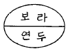
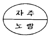
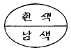
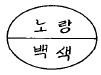
(정답률: 94%)
11. 다음 배색 중 가장 색상차이가 큰 것은?
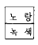
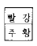
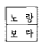
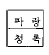
(정답률: 98%)
12. 도면을 접을 때 겉으로 드러나게 정리해야 하는 부분은?
- 조립도가 있는 부분
- 표제란이 있는 부분
- 재료표가 있는 부분
- 부품도가 있는 부분
(정답률: 88%)
13. 다음 중 축척(縮尺)의 척도는?
- 1/2
- 1/1
- 2/1
- 4/1
(정답률: 88%)
14. 다음 중 치수 기입시에 필요하지 않는 선은?
- 치수 보조선
- 치수선
- 지시선
- 이점쇄선
(정답률: 83%)
15. 원과 같은 면적의 정사각형을 작도할 때, 어느 점을 각각 중심으로 AB를 반지름으로한 원호를 그리는가?
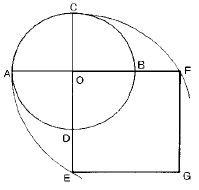
- A, B
- C, D
- E, F
- B, D
(정답률: 92%)
16. 다음 그림과 같이 주어진 직선 AB를 수직 2등분 할 때 맞지 않는 것은?
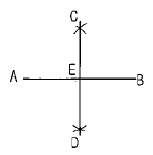
- AE = BE
- AC = BC
- AE = CE
- CD ⊥ AB
(정답률: 87%)
17. 다음 중 3소점에 의한 투시 형태는?
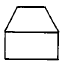
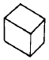
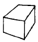
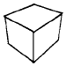
(정답률: 88%)
18. 다음 중 원근감을 갖도록 나타낸 그림은?
- 투시도
- 등각 투상도
- 부등각 투상도
- 정투상도
(정답률: 82%)
19. 곡선의 심리적 영향에 관한 설명이 잘못된 것은?
- 복잡하다.
- 불명료하다.
- 유연하다.
- 남성적이다.
(정답률: 95%)
20. 순색에 검정색을 혼합하면 명도와 채도는 어떻게 되는가?
- 채도는 낮아지고 명도는 높아진다.
- 채도는 높아지고 명도는 낮아진다.
- 채도와 명도가 높아진다.
- 채도와 명도가 낮아진다.
(정답률: 81%)
2과목: 임의 구분
21. 다음 중 명도대비가 가장 강한 배색은?
- 빨강과 검정
- 검정과 노랑
- 회색(N7)과 흰색
- 파랑과 회색(N5)
(정답률: 91%)
22. 다음 중 색채조절의 목적과 가장 거리가 먼 것은?
- 위험을 줄이고 안전도를 높인다.
- 생활의 능률을 올린다.
- 피로를 회복하고 생활의 명랑화를 꾀한다.
- 사치하고 화려한 생활을 누린다.
(정답률: 99%)
23. 다음 중 자기 소지의 특성이 아닌 것은?
- 흡수성이 거의 없다.
- 소성후 때리면 금속성을 낸다.
- 기계적 강도가 크다.
- 투광성이 없다.
(정답률: 88%)
24. 다음 중 자기를 만들 때 용융온도를 낮추는 융제역할을 하는 원료는?
- 규석
- 점토
- 납석
- 장석
(정답률: 72%)
25. 규회석은 어떤 소성용 소지의 원료로 사용하는 것이 가장 좋은가?
- 부분 소성
- 느린 소성
- 보통 소성
- 신속 소성
(정답률: 88%)
26. 알루미나에 대한 설명 중 맞는 것은?
- 내화도가 SK22 이다.
- 용융온도가 2⑤0℃ 이다.
- 비중이 2.97 이다.
- 흑색 분말이다.
(정답률: 68%)
27. 다음 중 석회석의 주성분은?
- 실리카
- 알루미나규산염
- 탄산칼슘
- 인산칼슘
(정답률: 85%)
28. 미세한 엽상결정의 집합체로 윤활성이 있으며 유약에 사용하면 광택이 좋아지는 원료는?
- 석회석
- 활석
- 유백석
- 백운석
(정답률: 71%)
29. 유약의 표면 및 외관에 따른 분류가 아닌 것은?
- 결정유
- 매트유
- 광택유
- 프릿유
(정답률: 83%)
30. 도자기 안료 중 산화 제2철을 사용하여 만든 것은?
- 진사(辰砂)
- 청화(靑華)
- 철사(鐵砂)
- 오수(吳須)
(정답률: 94%)
31. 코디어라이트질 내화갑의 설명에 맞는 것은?
- 비교적 고온소성의 것에 효과적이다.
- 비교적 저온소성의 것에 효과적이다.
- 산화에 의한 소모가 큰것이 결점이다.
- 가격이 상당히 고가(高價)이다.
(정답률: 66%)
32. 대단히 미세한 알갱이로 주광물은 몬모릴로나이트이고 점력이 매우 강하며 대부분 물 속에서 팽윤하는 것은?
- 와목점토
- 목절점토
- 벤토나이트
- 내화점토
(정답률: 96%)
33. 가소성 점토의 성질이 아닌 것은?
- 건조강도가 매우 센 미립자로 되어 있다.
- 소성 범위가 넓다.
- 가소성이 매우 크다.
- 일반적으로 유기물이 섞여 있지 않다.
(정답률: 92%)
34. 콜로이드에 의한 착색이 되는 원소는?
- 구리
- 코발트
- 크롬
- 아연
(정답률: 82%)
35. 유약용 슬립이 갖추어야 할 성질 중 잘못된 것은?
- 침강속도가 느려야 한다.
- 유동성(저점도)이 커야 한다.
- 건조할 때 수축이 작아야 한다.
- 건조 상태에서 탄성이 커야 한다.
(정답률: 34%)
36. 다음 중 장석의 종류가 아닌 것은?
- 나트륨장석(albite)
- 칼륨장석(orthoclase)
- 석회장석(anorthite)
- 견운모(sericite)
(정답률: 96%)
37. 나무연료 중 소나무를 많이 사용하는 가장 큰 이유는?
- 가격이 저렴하다.
- 화력이 강하고 재가 적다.
- 유해물질이 적다.
- 운반저장이 간편하다.
(정답률: 94%)
38. 다음 중 수비작업에 대한 설명에 해당되는 것은?
- 원료를 물에 풀어 점토와 분술물을 분리, 점토만 취하는 방법이다.
- 점토를 물에 침전, 저장하는 방법이다.
- 점토를 탈수기로 탈수시키는 방법이다.
- 점토를 물에 풀어 분쇄하는 방법이다.
(정답률: 95%)
39. 고알루미나질 내화벽돌의 용도에 해당되는 것은?
- 유리 용융 탱크 가마
- 시멘트 회전로의 제강대 바닥, 벽
- 제강용 평로 전기로
- 가열가마의 바닥 야금가마
(정답률: 73%)
40. 장석의 용융이 시작되는 온도는?
- 1300℃
- 1200℃
- 1100℃
- 1000℃
(정답률: 66%)
3과목: 임의 구분
41. 다음 중 고신라 시대의 공예품은?
- 황금 교구
- 청자기
- 기마인물도상
- 백자기
(정답률: 89%)
42. 우리나라 신석기 문화를 대표하는 빗살 무늬 토기에 관한 설명 중 잘못된 것은?
- 간결하고 합리적인 아름다움
- 자연스럽고 솔직한 아름다움
- 섬세하고 세련된 아름다움
- 소박하고 숙련된 솜씨의 아름다움
(정답률: 88%)
43. 조선시대 분청사기의 설명 중 맞지 않는 것은?
- 분청사기는 분장회청사기의 준말이다.
- 분청사기는 상감기법을 사용하지 않았다.
- 분청사기는 기면에 백토를 바르는 것이 특징이다.
- 분청사기는 퇴락한 청자기법에서 시작하였다.
(정답률: 88%)
44. 도자기용 소석고에 필요한 성질이 아닌 것은?
- 입자가 약간 굵은 것
- 순도가 높은 것
- 건조되어 있을 것
- 응결속도가 적절한 것
(정답률: 86%)
45. 주입 성형용 석고틀의 건조 온도로 적당한 것은?
- 40 – 50℃
- 60 - 70℃
- 80 – 90℃
- 90℃이상
(정답률: 80%)
46. 유약용 슬립이 갖추어야 할 성질이 아닌 것은?
- 침강속도가 느려야 한다.
- 유동성이 적어야 한다.
- 건조시 수축이 적어야 한다.
- 건조상태에서 탄성이 커야 한다.
(정답률: 65%)
47. 초벌구이 소성을 할 때 소성분위기는?
- 산화
- 환원
- 중성
- 환원에서 중성
(정답률: 86%)
48. 도자기 및 범랑제품에서 용출될 수 있는 일반적인 유해 금속이온과 비교적 거리가 먼 것은?
- 납
- 철
- 카드뮴
- 비소
(정답률: 82%)
49. 소성 후 급하게 냉각시켰을 경우 나타나는 현상으로 가장 올바른 것은?
- 연료가 과다하게 소비된다.
- 유약 및 소지가 파손된다.
- 유약이 말리는 현상이 나타난다.
- 소지에 반점이 생긴다.
(정답률: 93%)
50. 다음 중 시유도구에 속하지 않는 것은?
- 곰방대
- 붓
- 스펀지
- 유약통
(정답률: 97%)
51. 물레 성형시 점토 덩어리에 홈을 파내려가거나 아래 부분의 점토를 끌어 올릴 때 사용하는 도구는?
- 밀대
- 지질박
- 삼각칼
- 홈칼
(정답률: 94%)
52. 물레성형 작업에서 "정금대"의 용도는?
- 중심을 잡아 올릴 때
- 소지에 구멍을 낼 때
- 그릇의 크기를 잴 때
- 그릇의 표면을 고를 때
(정답률: 88%)
53. 다음 중 가압성형 방법으로 작업해야 할 제품은?
- 티(TEA) 컵
- 한식기, 대접
- 커피컵용 접시
- 타원형 접시
(정답률: 89%)
54. 높이 25㎝이상의 타원형 편호(굽은 원형, 몸통은 타원, 주둥이가 좁은)의 물레 성형방법이 올바른 것은?
- 항아리를 성형후 두들겨서 타원으로 한다.
- 항아리를 성형후 깍아서 타원으로 한다.
- 변형방지를 위해 굽은 스폰지위에서 다듬질 한다.
- 변형방지를 위해 굽깍기후 표면은 다듬질하지 않는다.
(정답률: 88%)
55. 이중 투각 항아리 제작에 대한 설명 중 맞는 것은?
- 말아쌓기 작업으로 동시에 만든다.
- 각기 물레성형후 외측 항아리를 세로로 잘라 내측 항아리를 안에 넣고 접합한다.
- 각기 물레성형후 외측 항아리를 가로로 잘라 내측 항아리를 안에 넣고 접합한다.
- 각기 성형후 둘다 가로로 이등분한 후 내측부터 접합한다.
(정답률: 90%)
56. 다음 도자기 장식법 중 수공채식을 설명한 것은?
- 햇빛에 감광되는 중크롬산 젤라틴을 사용하여 장식하는 방법
- 매우 정교한 자기는 브러시와 분무기를 써서 손으로 직접 채색하는 방법
- 원하는 모양으로 판 고무도장으로 색을 입히는 방법
- 생그릇에 그 소지와 다른 색의 얇은 슬립층을 입히는 방법
(정답률: 85%)
57. 소성 중 가마에서 불의의 화재가 발생했을 경우에 최우선으로 어떤 조치를 취해야 하는가?
- 주변에 위험물을 제거한다.
- 112에 신고한다.
- 소화기구를 사용한다.
- 연료를 차단한다.
(정답률: 91%)
58. 다음 중 넓은 점토판을 만들 때 사용되는 기계는?
- 지거링(jiggering)
- 슬랩 롤러(slab roller)
- 필터 프레스(filter press)
- 튜부 밀(tube mill)
(정답률: 87%)
59. 다음 가마의 종류 중 환원소성에 적당치 않은 가마는?
- 가스가마
- 기름가마
- 전기가마
- 장작가마
(정답률: 81%)
60. 굽깍기 형태가 균일하게 잘 된 것은?
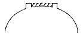
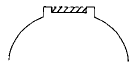
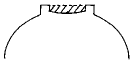
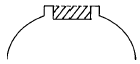
(정답률: 85%)